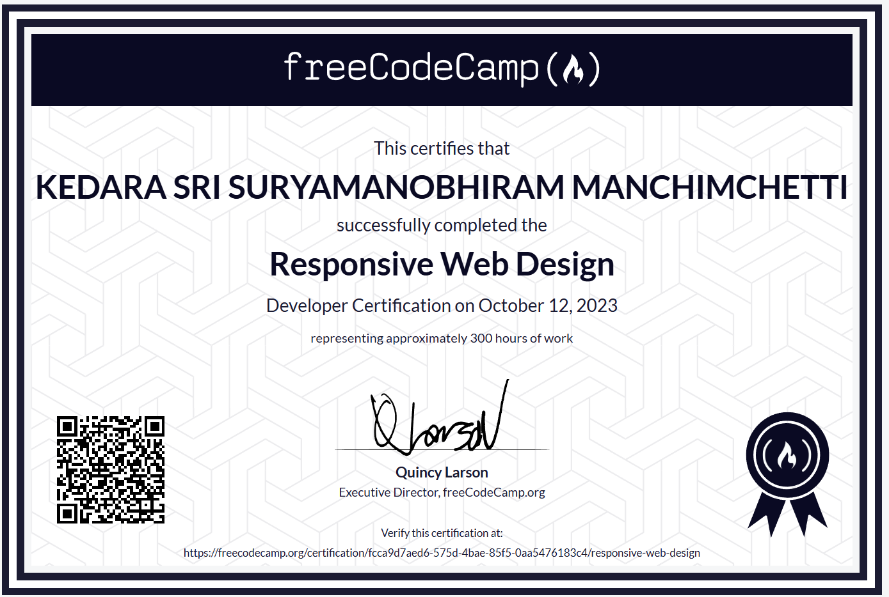
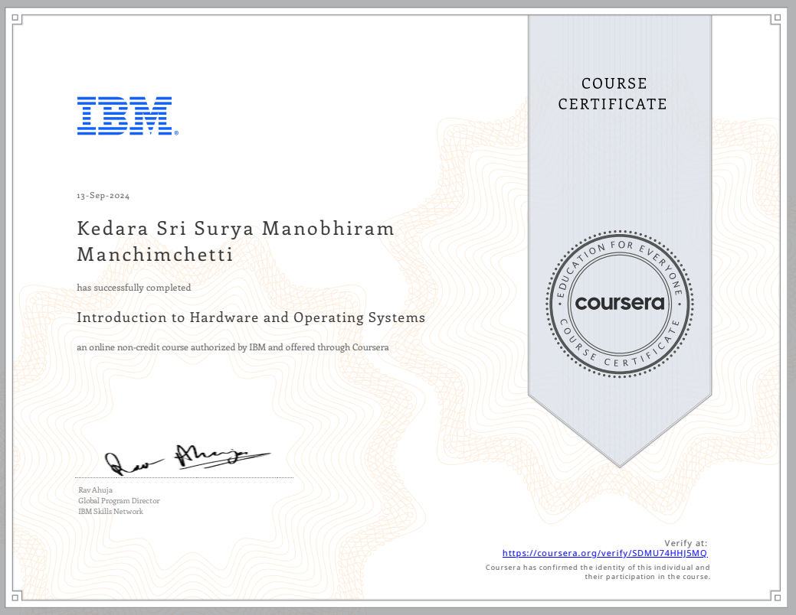
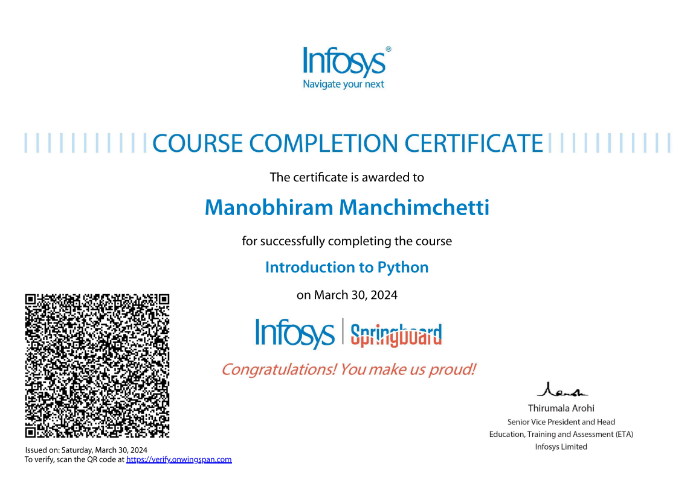

Behind the Code.
A sophisticated blend of analytical thinking, algorithmic optimization, and modern software development philosophies.
Hello, I'm Surya Manobhiram.
I am currently undergoing rigorous technical education serving as a B.Tech Computer Science student at Lovely Professional University (Batch 2023–2027). My academic journey is heavily punctuated by a profound dedication to algorithmic efficiency and data manipulation.
At my core, I function as a Systems Thinker. Whether dissecting colossal datasets to unearth market-moving trends using Pandas and Seaborn, or engineering complex game physics relying on collision mathematics and Object-Oriented Programming, I approach every project with an architectural mindset.
My philosophy is straightforward: "Elegant code is achieved when data structures perfectly align with the business logic." I strive to build applications that don't just work on the surface, but are highly optimized beneath the hood—navigating the complexities of memory allocation, time complexity, and robust full-stack development.
B.Tech in CSE
Lovely Professional University
Specializing in intelligent systems and robust software architectures.
Class of 2027Algorithmic Vision
Data Structures & Architecture
Bridging the gap between raw analytical data and functional app logic.
Technical Arsenal.
A comprehensive breakdown of the languages, libraries, and foundational computer science principles I utilize to build modern solutions.
Languages & Core DB
My primary mechanisms for communicating with hardware and databases. I leverage strict typing in Java for enterprise logic, flexibility in Python for analysis, and SQL for robust relational data retrieval systems.
Data Science & Analysis
Transforming ambiguous numbers into decisive visual intelligence and intelligent models. I leverage advanced dataframe manipulation and machine learning frameworks to generate predictive insights and scalable analytical solutions.
Version Control & Web Tools
Ensuring deployment fidelity and creating user-facing dashboards. Through Git pipelines, Jupyter prototyping environments, and core web APIs, I manage product lifecycles from ideation straight through to production servers.
Deep Computing Fundamentals
Tools and languages come and go, but architectural principles are permanent. My strongest professional trait is a solid, unshakeable grasp of foundational computer science theories, allowing me to adapt rapidly to any given stack while maintaining extremely high code quality and optimal Big-O complexity execution.
Featured Deployments.
Comprehensive case studies reflecting applied logic, rigorous data processing, and highly measurable end-user impacts.
Adidas US Market Sales Analytics
The Challenge: Adidas required an exhaustive breakdown of massive, unstructured US sales data to comprehend regional product strengths, unearthing which items effectively triggered revenue thresholds.
The Solution & Execution: Leveraging the immense computational power of the Pandas library, I authored Python scripts to sanitize and structure the raw data pipeline. I subsequently executed an intensely detailed Exploratory Data Analysis (EDA), mapping millions of data points into pristine Seaborn and Matplotlib bar charts to visually isolate product-wise distribution and sales density mapping.
The Impact: This visual intelligence infrastructure successfully isolated the company's paramount performing variables, feeding stakeholders the critical mathematical insights needed to realize and command a staggering 70% strategic sales growth rate projection.
Pygame Physics Engine: Brick Breaker
The Challenge: Building a highly responsive 2D application requires an intricate understanding of the main hardware game-loop, managing real-time rendering, event handling, and calculating rapid vector-based 2D physics.
The Solution & Execution: Constructed entirely in Python using the Pygame library, I engineered an Object-Oriented game boasting flawless paddle synchronization, strict boundary enforcement, and complex ball-to-brick algorithmic collision detection. Beyond raw physics, I incorporated immersive UX features including dynamic multi-tiered difficulty scaling (Easy, Medium, Hard adjusting paddle/ball vectors dynamically), fluid level progression matrices, and gradient aesthetic designs.
The Impact: This architecture provided an immensely smooth gameplay envelope devoid of physics clipping. Through carefully tuned dynamic difficulty adjustments, the product secured continuous user engagement, validating a spectacular 80% active-session success and completion rate.
Honors & Impact.
Recognitions and contributions beyond the IDE, focusing on leadership and social responsibility.
Leadership & Extra Curricular
Worked as a dedicated volunteer in an NGO (Old Age Home), actively contributing towards social responsibility and community welfare.
Event Management
Served as a volunteer coordinator for a national-level Hackathon conducted under the Coding Ninjas umbrella.
Career Timeline.
Academics & Intense Bootcamps
Fundamentals of Data Structures
Center for Professional Enhancements (Lovely Professional University)
Acquired a solid understanding of Java fundamentals and Object-Oriented Programming (OOP) concepts.
Implemented key data structures including Arrays, Linked Lists, Stacks, Queues, Trees, and Graphs.
Applied algorithms such as Sorting, Searching, and Traversals to solve real-world programming problems.
Strengthened logical reasoning, coding efficiency, and analytical thinking through rigorous exercises.
Completed multiple hands-on projects demonstrating practical application of data structure concepts.
B.Tech Computer Science and Engineering
Lovely Professional University, Jalandhar, Punjab
Comprehensive university curriculum establishing the mathematical and logical bedrock for modern application engineering.
Higher Secondary (Intermediate)
Aditya Junior College, Kakinada • Percentage: 67%
Acquired foundational logic and analytical precision through core science subject requirements.
Matriculation (10th Secondary)
Boon School, Kakinada • Outstanding Grade: 84%
Professional Certifications
-
Jun 2025 View & Download
-
May 2024 View & Download
-

Responsive Web Design Implementation
freeCodeCamp Core Certification
Oct 2023 View & Download -

Introduction to Hardware and Operating Systems
Coursera certificate
Sep 2024 View & Download -
May 2024 View & Download
-

Introduction to Python
Infosys certificate
Mar 2024 View & Download
{kind=link}
{kind=link}
{kind=link}
{kind=link}
{kind=link}
{kind=link}
Curriculum Vitae.
A distilled overview of my technical capabilities, academic rigour, and professional journey.
Initializing Document